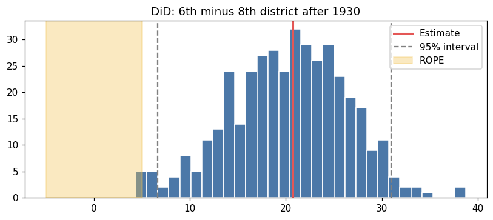
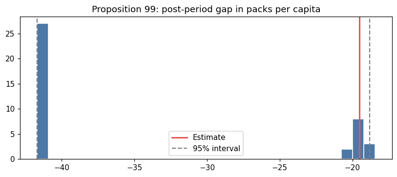
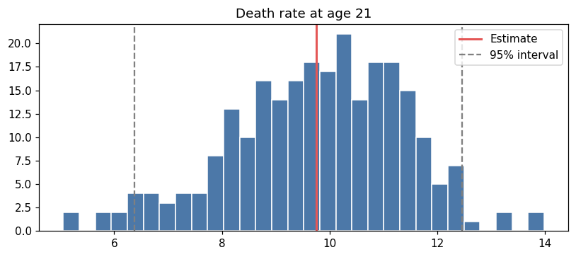
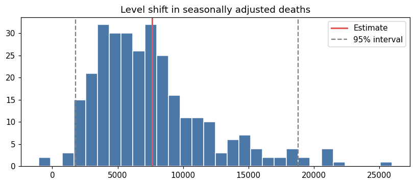
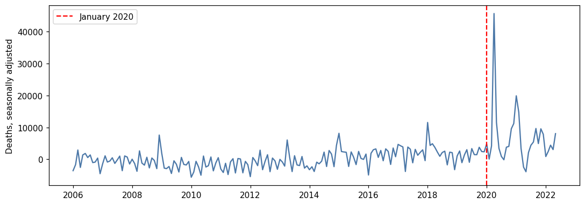
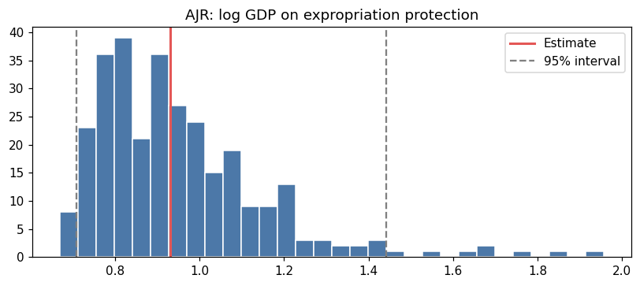

8.5 Bayesian Causal Inference for Quasi-Experimental Data
A quasi-experiment identifies an effect only after the design is stated: parallel trends, a donor pool, a cutoff, an interruption date, or an instrument. The Bayesian step does not replace that design. It turns the estimator into a distribution of plausible effects.
PyCausalML does this without PyMC. For difference-in-differences, regression discontinuity, interrupted time series, instrumental variables, and synthetic control, the interval is a Bayesian bootstrap (Rubin, 1981): each draw reweights the rows with Dirichlet weights and refits the same estimator. For a linear conditional average treatment effect, BayesianLinearCATE uses a normal posterior on doubly robust scores.
A region of practical equivalence (ROPE) is a band of effects you would treat as too small to matter. rope_probability is the share of posterior draws inside that band.
Overview
Estimator
Design
What the interval describes
BayesianLinearCATE
Unconfounded binary treatment, linear CATE
Normal posterior of \(a + X\beta\) on doubly robust scores
DifferenceInDifferences
Two groups, before and after
Bayesian bootstrap of \(\tau\) in the interaction regression
SyntheticControl
One treated unit, many donors
Bayesian bootstrap of the pre-period match
RegressionDiscontinuity
Cutoff on a running variable
Bayesian bootstrap of the local linear jump
InterruptedTimeSeries
One series, known interruption
Bayesian bootstrap of the level shift
InstrumentalVariable
Endogenous treatment, instrument
Bayesian bootstrap of both stages
The real datasets are the ones shipped with CausalPy.
Implementation in Python
One simulated conditional effect, then five CausalPy datasets: banks (DiD), California Proposition 99 (synthetic control), the drinking-age series (RDD), England and Wales deaths (interrupted time series), and the Acemoglu, Johnson, and Robinson sample (IV).
Set Up
Code
import subprocessimport sysfrom pathlib import Pathdef _repo_root() -> Path: here = Path.cwd().resolve()for cand in [here, *here.parents]:if (cand /"pyproject.toml").is_file() and (cand /"src"/"pycausalml").is_dir():return candraiseFileNotFoundError("PyCausalML repository was not found. Run this notebook from the repository." )root = _repo_root()try:import pycausalml # noqa: F401print("PyCausalML ready.")exceptImportError: subprocess.check_call( [sys.executable, "-m", "pip", "install", "-q", "-e", f"{root}[plot]"], )print("PyCausalML installed.")print("Repository:", root)
%matplotlib inlineimport matplotlib.pyplot as pltimport numpy as npimport pandas as pdfrom pycausalml import ( BayesianLinearCATE, DifferenceInDifferences, InstrumentalVariable, InterruptedTimeSeries, RegressionDiscontinuity, SyntheticControl,)from pycausalml.bayesian_causal_inference import rope_probabilityplt.rcParams["figure.dpi"] =110pd.set_option("display.float_format", lambda x: f"{x:,.3f}")print("Imported PyCausalML")
Imported PyCausalML
Code
CAUSALPY_FILES = {"banks": "banks.csv","covid": "deaths_and_temps_england_wales.csv","drinking": "drinking.csv","risk": "AJR2001.csv","schoolReturns": "schoolingReturns.csv","california_prop99": "california_prop99.csv",}def load_causalpy(name: str) -> pd.DataFrame:"""Load a CausalPy example dataset. Uses causalpy.load_data when that package is installed. Otherwise reads the same CSV from the CausalPy GitHub data directory. """try:import causalpy as cp frame = cp.load_data(name)print(f"Loaded {name!r} with causalpy.load_data. Shape {frame.shape}.")return frameexceptImportError: url = ("https://raw.githubusercontent.com/pymc-labs/CausalPy/main/causalpy/data/"+ CAUSALPY_FILES[name] ) frame = pd.read_csv(url)print(f"CausalPy is not installed. Loaded {name!r} from")print(url)print("Install the package with: pip install 'pycausalml[causalpy]'")print(f"Shape {frame.shape}.")return frame
Posterior draws
Every quasi-experimental estimator stores draws_ and a summary() without those draws. The histogram is the posterior the interval is read from.
Code
def show_draws(model, title, rope=None): draws = np.asarray(model.draws_, dtype=float) summary = model.summary()print(pd.Series({k: summary[k] for k in summary if k !="rope_probability"}).round(3))if rope isnotNone:print(f"ROPE {rope}: {rope_probability(draws, rope[0], rope[1]):.3f}") fig, ax = plt.subplots(figsize=(7.5, 3.4)) ax.hist(draws, bins=30, color="#4C78A8", edgecolor="white") ax.axvline(model.effect_, color="#E45756", lw=2, label="Estimate") lo, hi = np.quantile(draws, [0.025, 0.975]) ax.axvline(lo, color="gray", ls="--") ax.axvline(hi, color="gray", ls="--", label="95% interval")if rope isnotNone: ax.axvspan(rope[0], rope[1], color="#F2C14E", alpha=0.35, label="ROPE") ax.set_title(title) ax.legend() fig.tight_layout() plt.show()
Part 1: Linear CATE on a simulation
The conditional effect is \(1.5 + 0.8 x_0\). Treatment is binary and depends on \(x_0\). BayesianLinearCATE cross-fits the outcome and the propensity, builds doubly robust scores, and puts a ridge-normal posterior on a linear function of \(X\).
Average treatment effect from the doubly robust scores:
{'estimate': 1.491, 'std.err': 0.073}
Mean predicted CATE: 1.491
Mean true CATE: 1.495
x0 predicted true ci_lower ci_upper
0 0.126 1.598 1.601 1.437 1.759
1 -0.536 1.031 1.071 0.764 1.298
2 -0.704 0.914 0.937 0.672 1.156
3 -2.325 -0.543 -0.360 -0.924 -0.162
Real-World Data
The series below is a real dataset shipped with CausalPy (PyMC Labs), under the Apache License 2.0. The files live in causalpy/data.
@software{causalpy,
author = {{PyMC Labs}},
title = {CausalPy: Causal inference for quasi-experiments in Python},
url = {https://github.com/pymc-labs/CausalPy},
year = {2026}
}
PyCausalML fits the estimator. CausalPy is the data source. When CausalPy is installed, causalpy.load_data reads the packaged file. Otherwise the notebook reads the same CSV from that GitHub directory.
The five fits below use that collection. Each plot is the posterior of the design effect.
Part 2: Difference-in-differences, banking closures
banks records banks in business in the 6th and 8th Federal Reserve districts, 1929–1934 (Richardson and Troost; Angrist and Pischke, Mastering Metrics). The 6th district is treated. The post period starts in 1931, matching CausalPy’s intervention at 1930.5. The ROPE is a change of fewer than 5 banks, used here only as a scale for “small.”
CausalPy is not installed. Loaded 'banks' from
https://raw.githubusercontent.com/pymc-labs/CausalPy/main/causalpy/data/banks.csv
Install the package with: pip install 'pycausalml[causalpy]'
Shape (1878, 9).
estimate 20.750
ci_lower 6.673
ci_upper 30.995
posterior_mean 20.279
dtype: float64
ROPE (-5, 5): 0.007

Part 3: Synthetic control, California Proposition 99
california_prop99 is annual per-capita cigarette sales, 1970–2000 (Abadie, Diamond, and Hainmueller, 2010). California adopted the tax in 1989. Donor weights are nonnegative and sum to one. The point estimate uses the original pre-period. Bootstrap draws that match California less well can move the gap, so the posterior mean need not equal that point estimate.
Code
prop = load_causalpy("california_prop99").set_index("Year").sort_index().astype(float)pre = prop.index <1989donors = prop.drop(columns=["California"])scm = SyntheticControl(n_boot=40, random_state=0)scm.fit( donors.loc[pre].to_numpy(), prop.loc[pre, "California"].to_numpy(), donors.loc[~pre].to_numpy(), prop.loc[~pre, "California"].to_numpy(),)weights = pd.Series(scm.weights_, index=donors.columns).sort_values(ascending=False)print("Largest donor weights:")print(weights.head(6).round(3))show_draws(scm, "Proposition 99: post-period gap in packs per capita")
CausalPy is not installed. Loaded 'california_prop99' from
https://raw.githubusercontent.com/pymc-labs/CausalPy/main/causalpy/data/california_prop99.csv
Install the package with: pip install 'pycausalml[causalpy]'
Shape (31, 40).
Largest donor weights:
Utah 0.394
Montana 0.232
Nevada 0.205
Connecticut 0.109
New Hampshire 0.045
Colorado 0.015
dtype: float64
estimate -19.514
ci_lower -41.708
ci_upper -18.807
posterior_mean -34.486
dtype: float64

Part 4: Regression discontinuity, minimum legal drinking age
drinking is the age-cell mortality series from the CausalPy regression-discontinuity example. The running variable is age. The cutoff is 21. The outcome is the all-cause death rate. The bandwidth is one year.
Code
drinking = load_causalpy("drinking").rename(columns={"agecell": "age"})rdd = RegressionDiscontinuity(cutoff=21, bandwidth=1.0, n_boot=250, random_state=0)rdd.fit(drinking["age"].to_numpy(), drinking["all"].to_numpy())show_draws(rdd, "Death rate at age 21")
CausalPy is not installed. Loaded 'drinking' from
https://raw.githubusercontent.com/pymc-labs/CausalPy/main/causalpy/data/drinking.csv
Install the package with: pip install 'pycausalml[causalpy]'
Shape (48, 20).
estimate 9.753
ci_lower 6.380
ci_upper 12.452
posterior_mean 9.780
dtype: float64

Part 5: Interrupted time series, deaths in England and Wales
covid is the CausalPy monthly series of deaths and temperature. pre is true through December 2019. Temperature and calendar month are removed using coefficients fit on the pre-period only, so the post-period level is not absorbed into the seasonal fit. InterruptedTimeSeries then estimates the level shift at the first post-period month. This is a design illustration. It is not an estimate of the pandemic’s mortality toll: the interruption coincides with many other changes.
CausalPy is not installed. Loaded 'covid' from
https://raw.githubusercontent.com/pymc-labs/CausalPy/main/causalpy/data/deaths_and_temps_england_wales.csv
Install the package with: pip install 'pycausalml[causalpy]'
Shape (197, 7).
Intervention index: 168 (2020-01-01)
estimate 7,643.669
ci_lower 1,795.500
ci_upper 18,780.559
posterior_mean 7,544.907
dtype: float64


Part 6: Instrumental variables, colonial origins
risk is the Acemoglu, Johnson, and Robinson (2001) country sample (AJR2001.csv). Log GDP per capita is the outcome, protection against expropriation (risk) is the endogenous treatment, and log settler mortality (logmort0) is the instrument. The exclusion restriction — settler mortality affects present income only through institutions — is contested. The posterior below is the 2SLS coefficient under that assumption, not a settled answer.
Code
ajr = load_causalpy("risk").dropna(subset=["loggdp", "risk", "logmort0"])iv = InstrumentalVariable(n_boot=300, random_state=0)iv.fit(ajr["loggdp"].to_numpy(), ajr["risk"].to_numpy(), ajr["logmort0"].to_numpy())show_draws(iv, "AJR: log GDP on expropriation protection")
CausalPy is not installed. Loaded 'risk' from
https://raw.githubusercontent.com/pymc-labs/CausalPy/main/causalpy/data/AJR2001.csv
Install the package with: pip install 'pycausalml[causalpy]'
Shape (64, 31).
estimate 0.929
ci_lower 0.709
ci_upper 1.441
posterior_mean 0.951
dtype: float64

Reading the summaries together
Dataset
Design
Estimator
Simulated CATE
Unconfoundedness, linear effect
BayesianLinearCATE
Banks
Parallel trends across two Federal Reserve districts
DifferenceInDifferences
Proposition 99
A weighted donor pool matches California before 1989
SyntheticControl
Drinking age
Units just above and below 21 are comparable
RegressionDiscontinuity
England and Wales deaths
The pre-period seasonality would have continued
InterruptedTimeSeries
AJR 2001
Settler mortality affects income only through institutions
InstrumentalVariable
A narrow interval does not repair a bad design. Check the pre-trend, the pre-period synthetic fit, the density at the cutoff, or the first stage before reading the posterior as a causal effect.